The PNMX_Installer handles all of the install tasks for all PocketNumerix products and subscription services. The installer has a very small footprint (80KB), so it can be downloaded quickly, even by dialup customers. Once the target device (must be a Pocket PC 2002 or newer) is connected to the desktop computer, the installer queries it for parameters that facilitate integrated download and product registration. The installer requests only the specific binaries needed by your device and nothing else. This approach vastly reduces the size of the installer and the bandwidth required to accomplish the installation. Consequently it’s faster than the standard all-in-one, multi-platform approach. In fact, it’s gobs faster! That’s a technical term, like a google, but smaller.
There is no opt-in for product registration - after installation, you’re just done. The good news is that you’re entitled to reinstall and/or upgrade software to the same device for as long as you can keep it running. The bad news is that you can’t transfer the license or software to another device, so you should be sure you want the software running there before you install it. This applies at an order-item level of granularity. For example, suppose that you have two Pocket PCs - one running Pocket PC 2002 (PPC02) and the other running Windows Mobile 5 (WM5) and you want to install BondManager (BM) and StrategyExplorer (SX) on the PPC02 and NillaHedge (NH) and YieldCurveFitter (YCF) and any associated subscriptions on WM5, but you inadvertently included all software on the same order. If you’re not overly impetuous, you can sort it all out at installation time. Assuming that you start out installing software on the WM5 device, you simply deselect the products intended for PPC02 device (SX and BM in this example), leaving only NH, YCF and any associated subscription services, and allow the installation to proceed.[1] When it completes, you simply disconnect the WM5 device and connect the PPC02 device. This time you would deselect the products and subscription services previously installed on the WM5 device (they will no longer download or install to any other device) and let the remaining products install. People that share software with their friends will not appreciate the licensing and delivery scheme, but we think everyone else will appreciate the free upgrades for the life of the device.
The installer displays the icon for each of the product
components while they’re being installed – that’s so you’ll recognize them
later. Other than that, the installer is
deliberately non-graphical because a few artsy pictures could easily double the
installer’s size (or much worse), but also because they ‘make’ you watch,
thinking there might be something important for you to do or read, when in fact
it’s usually nothing more than self-promotion, ads, and superfluous
entertainment intended to obfuscate the mind numbingly lengthy installation
process when multi-platform install files are used. The PNMX_Installer
also offers no handy product usage tips that you’d probably forget anyway; and
there’s nothing to configure except which products you want installed. That’s largely because customers very
infrequently modify the target directories, yet everyone has to click through
them. The install directory is Program
Files\PocketNumerix and the document directory
defaults to My Documents\PocketNumerix,[2]
both are very unlikely to conflict with any other software. We’re hoping you’ll appreciate the streamlined
install process more than you’ll miss the flexibility to specify the directory
names.
1) Installation
requires use of a Windows desktop or laptop PC with an active Internet
connection. If you have a
2) Device specific binaries have been created for the following target devices.[3]
Windows
Windows
3) The Pocket PC must be cradled and the cradle connected to a desktop machine to complete the install.
Installation of all products and/or subscriptions is fairly straightforward. To prepare, you should:
1) Download the installer from: http://pnmx.com/Downloads/PNMX_Installer.exe and save it to the directory of your choice.
2) Copy the install token that was attached to your order confirmation email into the directory where you just downloaded the installer. Be sure that the file is still named ‘PNMX_InstallToken’ - the installer looks for a file with that name.
3) Start the installer (e.g. by double clicking the icon).
4) This is where you get the obligatory software license dialog…
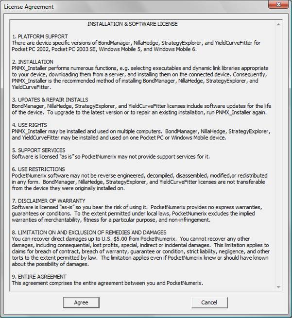
5) Most of the real work is done on a screen that looks something like the one below, except that your name, email address, and invoice number will be displayed where Oren Gutan’s information appears here.
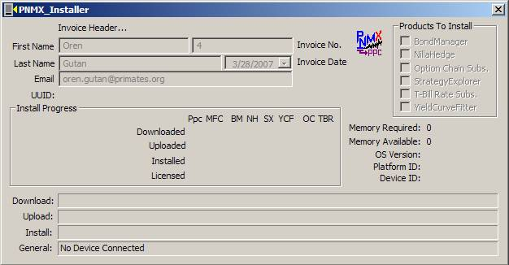
If you’ve already cradled the target Pocket PC and connected the cradle to the desktop machine you’ll see a bit more information - something like the screen shot below. If you haven’t done so yet, you won’t be able to get any farther. After the device is connected, you can see a bit of information about the connected device.[4] Note that Memory Available in the device is indicated on the right, along with the OS Version. If all goes well, the Fetch BOM button will appear (as in the next screen shot).
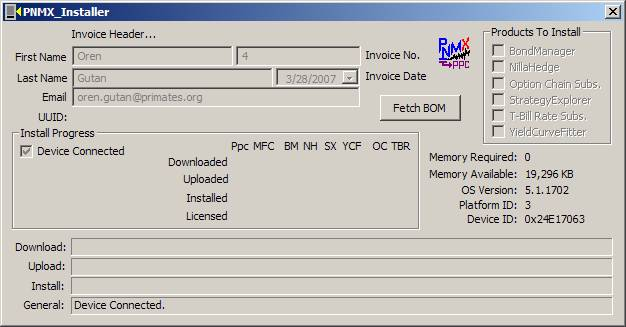
Upon clicking the Fetch BOM button, the installer attempts to retrieve the Bill-of-Materials (BOM) associated with your order, tailored to the operating system of the cradled device. Given that this is the installer’s initial contact with the server, there is typically a longer delay than you’ll observe in subsequent operations. You will usually see the Download status area indicating that the installer is ‘waiting…’ on the server regarding your BOM request. A status of WSA E BLOCKED would normally be bad news, but in this case it (usually) means that a synchronous connection blocked and the installer is now waiting on the server in asynchronous mode. It should take less than fifteen seconds to establish a connection. The installer gives up on its own after thirty seconds.
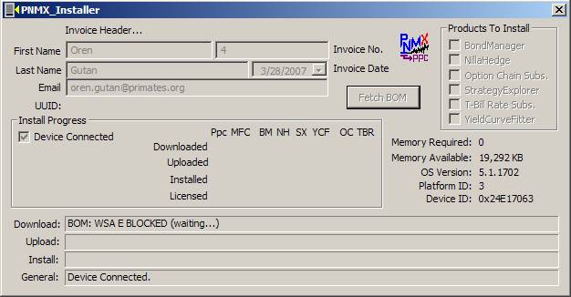
Assuming that your desktop machine is actively connected to the Internet, you will see a very brief flurry of activity associated with your request. From the point where the connection stops blocking, it will probably take just a few seconds to enable the products on your order in the Products To Install box - sometimes it’s nearly instantaneous. In the next phase, it downloads and installs PpcInstall, the device resident installer component. Once it’s complete, you should see a screen similar to the one below.
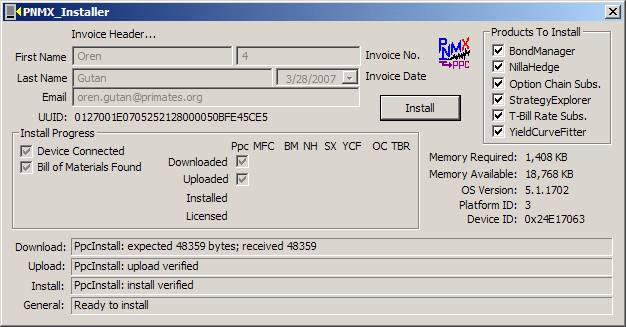
Naturally, if you didn’t order every item on the menu, you won’t have all of the product and subscription buttons enabled. But, other than that, some of the changes you may notice include:
1) Several of the status areas at the bottom of the dialog display breadcrumbs from the recent intermediate operations.
2) The Bill of Materials Found checkbox in the Install Progress box indicates that the installer has captured the information it needs to proceed with the installation.
3) In the center of the Install Progress box, three checkboxes summarize the progress for the products and subscriptions on your order as well as one or two enabling binaries.
4) The device UUID should now be displayed above the Install Progress box.
5) All of the products on your order should now be enabled in the Products To Install box in the upper right corner of the installer dialog.
6) The Memory Required by all of the enabled items on your order is now displayed above Memory Available. You can enable and disable the products appearing in the Products To Install box and observe the Memory Required recalculate each time.[5]
Note: Applications
targeting Pocket PC 2003 and Windows Mobile 5 series devices need to override
the
For many people the next step is probably clicking the Install button and going for a cup of coffee, in which case, the next screen you’re likely to see (if you ordered everything on the menu) is analogous to the one below.
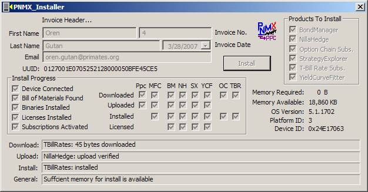
If you have a fast Internet connection, all four products and both subscription services will install in a minute or two. Note that the Binaries Installed and Subscriptions Activated check boxes indicate complete installation of the products and subscriptions enabled at the time you clicked the Install button. If you have multiple products on your order but only enabled installation of one of them, Binaries Installed will indicate completion even if uninstalled (but not enabled) order items remain. Subscriptions behave similarly - if you have two subscriptions on the order, but only enabled one for Install, Subscriptions Activated is checked when the enabled subscription completes the install process.
You may also notice that Memory Available and Memory Required amounts update after each product or component is installed with product and subscription checkboxes being disabled after each order item completes installation. Note that subscriptions display a Download and Install status, but no Upload stage. Technically, neither the subscription upload or install process is the same as it is for products – the subscriptions Install check box indicates completion, nothing more.
You’re done! You exit the installer by clicking the close button (the in the upper right hand corner of the dialog).
It’s prudent to retain the PNMX_InstallToken so you can reinstall at will. It’s relatively easy to keep your Pocket PC files backed up to your desktop machine using ActiveSync, but installed software is typically not backed up. Obviously, if you have your install token handy, reinstalling will be much less hassle.
One screen you might encounter appears below – it’s characterized by all of the Invoice Header fields (except the Invoice Date) being empty. Even though the installer found a device connected to the desktop machine, it won’t be able to proceed with the installation, hence the Fetch BOM button does not appear. Please verify that you have the install token associated with your order in the same directory as the installer and be sure that it’s named ‘PNMX_InstallToken’ (without the single quotes).
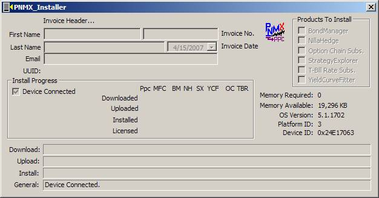
If you didn’t install all of the order items at the same time, you might expect to see screens something like those that follow.
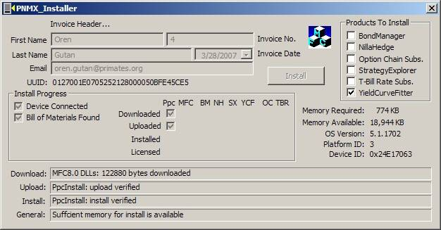
YieldCurveFitter
download waiting for a connection after
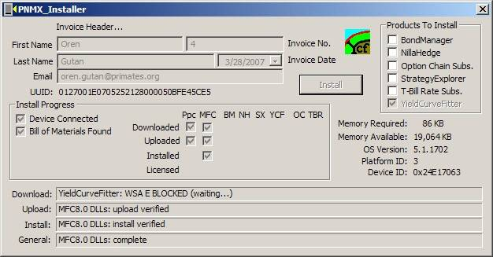
StrategyExplorer
completely uploaded, but not yet indicating that upload is complete, after
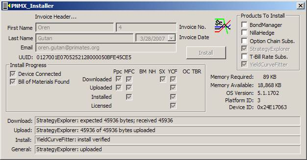
BondManager
waiting for a license after
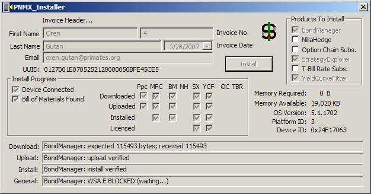
NillaHedge uploading after
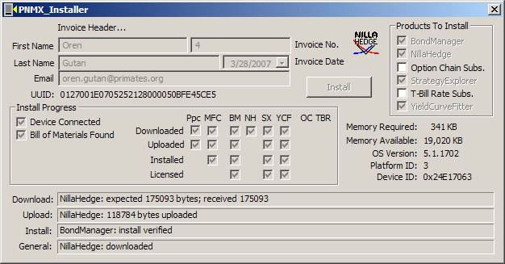
[1] The server associates products and subscription services with devices at the completion of download, so pulling the plug during upload will not prevent the device order-item association.
[2] The documents directory is actually controlled by a registry variable. If necessary, the document directory can be changed in the device registry.
[3] Palm, Blackberry, and SmartPhones are not supported due to historically smaller screen sizes, SmartPhones with faster processors and QVGA resolution (240x320) are now available, so they could be supported at some point in the future.
[4] You can recognize a Windows Mobile 5 device by an OS Version with a leading ‘5’. Pocket PC 2003 devices sport a leading ‘4’ and Pocket PC 2002 devices have a leading ‘3’.
[5] The Memory Required
is an estimate based on the CAB file sizes of the enabled products and the
[6] If you
install one product on a PPC03 or WM5 device (thereby including the